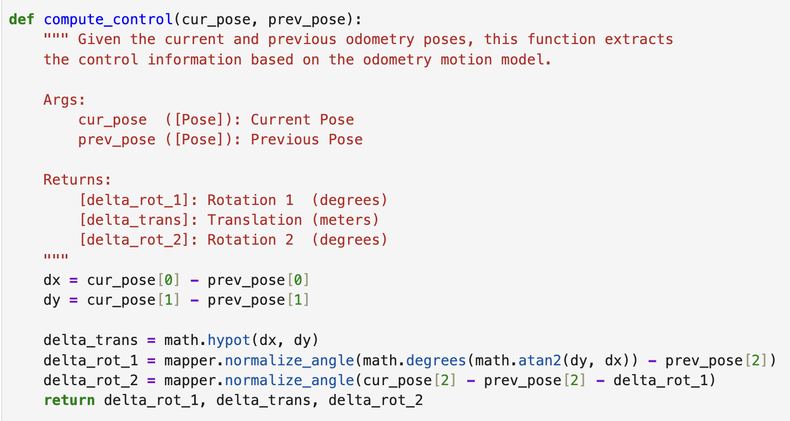
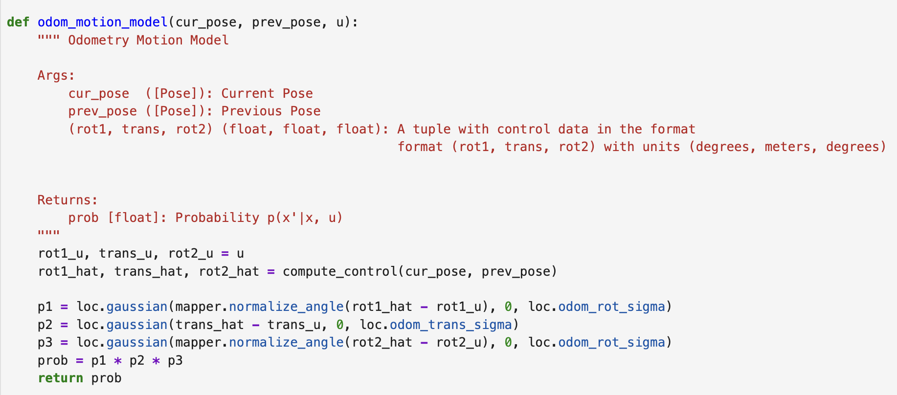
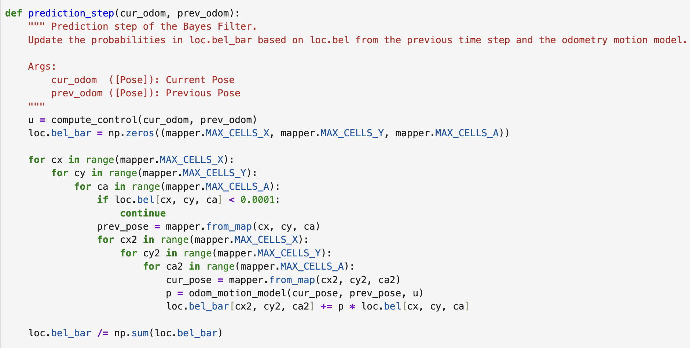
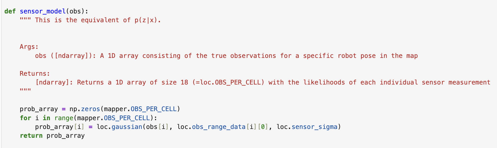
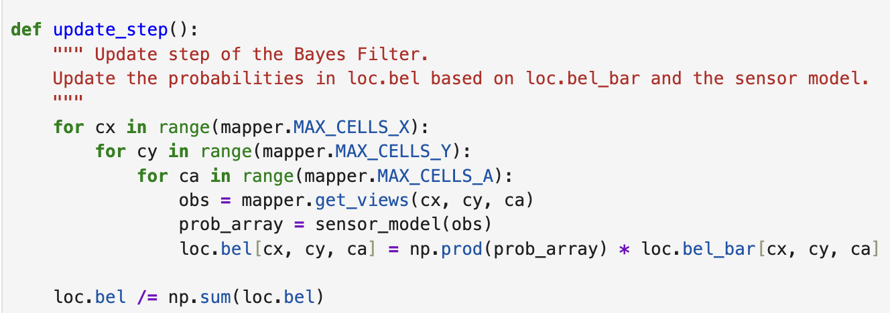

Lab 10: Localization
Bayes Filter
Grid Localization uses a Bayes Filter to estimate the robot's pose on a discretized 3D map. The robot state is represented as (x, y, θ). Each grid cell stores the probability of the robot being at that state, and the probabilities across all cells always sum to 1.
Prediction Step: Using odometry data and the odometry motion model to propagate the previous posterior belief bel into the current prior belief bel_bar. Since odometry is noisy, bel_bar is more spread out than bel, reflecting increased uncertainty after motion.
Update step: Using 18 ToF sensor measurements collected during a 360 degrees rotation and compares them against the precomputed true measurements stored for each grid cell. The likelihood of each grid cell is computed using a Gaussian sensor model, and bel_bar is corrected into the posterior belief bel.
Compute Control
The robot movement between two odometry poses is decomposed into three control inputs: an initial rotation delta_rot_1, a translation delta_trans, and a final rotation delta_rot_2. Both rotation angles are normalized to (-180°, 180°) to ensure consistency when computing Gaussian probabilities.

Odometry Motion Model
To estimate how likely the robot moved from one pose to another given the actual odometry, the difference between the actual control input and the theoretically required control is modeled as three independent Gaussians, one for each motion component. The final transition probability is the product of the three.

Prediction Step
To propagate the belief from the previous time step to the current time step, every possible previous pose is weighted by its probability in bel and combined with the transition probability from the odometry motion model to update bel_bar. Poses with probability below 0.0001 in bel are skipped to reduce computation time. The result is normalized at the end to ensure all probabilities sum to 1.

Sensor Model
To calculate the degree of match between the actual sensor readings and the grid cells, each of the 18 ToF measurements is compared with the pre-calculated true measurement for that cell using a Gaussian function, thus returning an array containing 18 likelihood values.

Update
To update the posterior belief, the joint likelihood of all 18 sensor measurements is computed for each grid cell using the sensor model, and multiplied by the corresponding prior belief from bel_bar. Then normalize the results.

Result
Statement
I got much help from Yueming Liu's page.